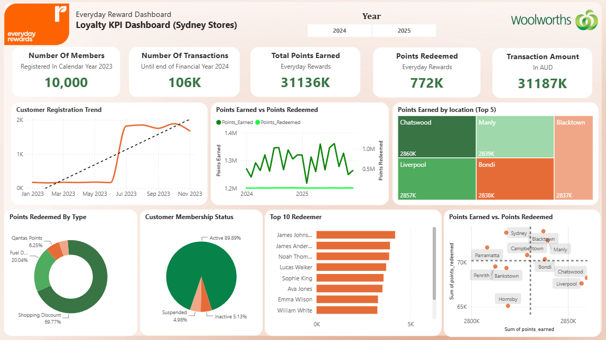
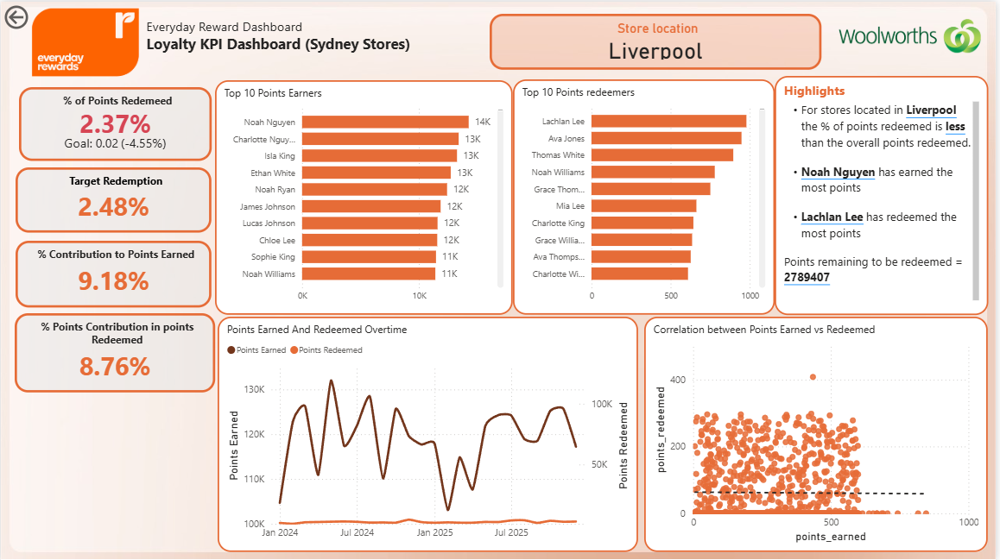

How engaged are loyalty members across Sydney stores, and are they redeeming their points?
04 Case study · Loyalty KPIs
Everyday Rewards Loyalty KPI Dashboard
An interactive Power BI dashboard analysing Everyday Rewards loyalty program performance across Sydney stores — tracking member engagement, points activity, and reward redemption to support data-driven retention strategy.

10,000 members
106K transactions
01 — In 30 seconds
The Short Version
Modelled loyalty transaction data and built a two-page Power BI dashboard with DAX measures, member segmentation and a store drill-through.
Membership is growing steadily, but points earned far outpace redemptions, and a few stores drive most of the activity.
10,000
Members Registered (2023)
106K
Transactions (to FY 2024)
31.1M
Points Earned
772K
Points Redeemed
02 — Visual Analysis
Dashboard Preview
Click any screenshot to view it full size.

03 — Methodology
How It Was Done
Four steps. Select one to see the detail.
01
Data Preparation
Cleaned loyalty transaction data covering members, stores, points earned and redeemed, and reward categories.
02
Data Modelling & DAX
Built a relational model and DAX measures for members, transactions, points earned, points redeemed and transaction value.
03
Dashboard Design
KPI cards, trend visuals and segmentation charts, cross-filtered by year and store slicers.
04
Store Drill-Through Page
A store-specific page with customer rankings, KPI comparisons, trends and automated insights.
04 — Key Findings
Business Insights
Points Earned Outpace Redemption
Members earn far more points than they redeem — untapped reward value and a clear opportunity to drive redemption.
Steady Member Growth
Registration trends show consistent uptake of the loyalty program.
Concentrated Store Performance
A small group of Sydney stores accounts for a disproportionate share of points activity.